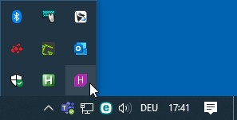
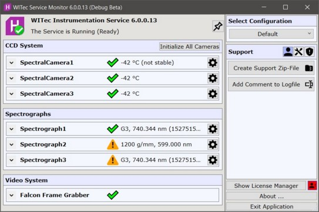
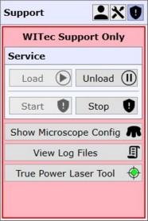

|
WITec 服务监视器概述
|
WITec 服务监视器随 WITec Suite 完整安装包自动安装，并在登录时自动启动。
它显示仪器服务、显微镜控制器、光谱系统（包括 CCD 相机和光谱仪）以及所有摄像机的状态。此外，它还为 WITec 支持团队提供多种配置能力。
您可以通过点击主屏幕右下角 Windows 任务图标栏中的H 图标打开服务监视器：


设备列表
绿色对勾表示设备已连接并按预期工作。
您可以点击设备名称以展开视图并查看更多信息。
显微镜控制器
显示连接的显微镜控制器单元及其序列号和固件版本。
CCD 系统
显示所有已配置的光谱相机以及所有已连接/已通电相机的当前温度。
初始化所有相机
断开并（重新）初始化所有光谱相机。
这允许使用在 WITec 软件启动之后插入或通电的相机。
请勿在任何测量期间点击此按钮！
配置 CCD 相机
请参阅CCD 相机配置。
光谱仪
显示所有已配置的光谱仪以及当前光栅及其位置。
如果显示警告图标，光谱仪可能未校准。
请参阅光谱仪校准。
视频系统
显示所有已配置的摄像机（或对于旧系统：帧采集器）。
菜单
选择配置
允许您在不同的显微镜配置之间进行选择。
此功能仅用于具有多个光学/传感器组合的特殊显微镜。
创建支持 ZIP 文件
打开创建支持 ZIP 文件对话框。
请参阅如何创建支持 ZIP 文件。
向日志文件添加注释
允许在发生错误或软件行为异常时添加注释，以便 WITec 分析日志文件并知道发生异常的时间。
显示许可证管理器
打开 WITec 许可证管理器应用程序
支持

这些工具仅供 WITec 支持团队成员使用。
真实功率激光工具允许您进行激光光纤调节。